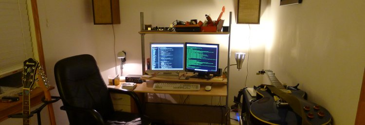

Welcome! You have reached the website of Christopher Moylan – software developer, Linux enthusiast, computer hobbyist, audiophile, bookworm, aspiring gourmet, amateur rocker, wanderer, thinker...et cetera. That's me in the picture above, hiking at Mount Rainier in 2008.
If you're looking for my professional qualifications, head over to the professional section where you can read more about my favorite ways to keep a roof over my head. The portfolio provides a glimpse of some of the work that I have done recently. For current happenings, feel free to check out the journal. I like to write about whatever hobbies and projects are currently occupying my time.
If you're looking for my professional qualifications, head over to the professional section where you can read more about my favorite ways to keep a roof over my head. The portfolio provides a glimpse of some of the work that I have done recently. For current happenings, feel free to check out the journal. I like to write about whatever hobbies and projects are currently occupying my time.
This is a sub heading
If you're looking for my professional qualifications, head over to the professional section where you can read more about my favorite ways to keep a roof over my head. The portfolio provides a glimpse of some of the work that I have done recently. For current happenings, feel free to check out the journal. I like to write about whatever hobbies and projects are currently occupying my time.
This is a sub sub heading
If you would like to contact me, email works best. I can be reached at  My GitHub profile might also be of interest. I'm usually on Freenode hanging out in #pylons.
My GitHub profile might also be of interest. I'm usually on Freenode hanging out in #pylons.
Other than that, have fun browsing the site.